Weather in Bergen
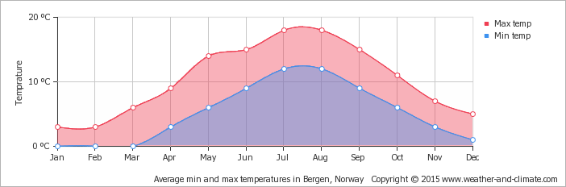
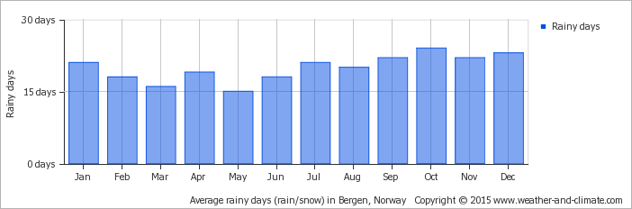
By www.weather-and-climate.com
Because of the mountains surrounding the city, Bergen is the city with the most rain in Norway.
On average, the warmest month is July and the coolest month is January. September is the wettest month and May is the driest month.
An umbrella will be a handy thing to always carry, but you should know that the wind in Bergen can easily break it. You might need more than one! (and consider buying a rain coat)
Places to go
The Seven Mountains
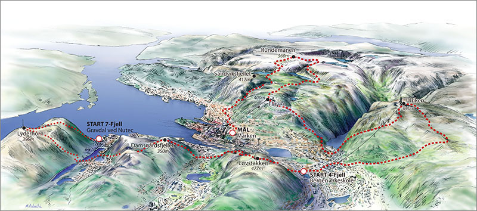
By bergenoghordalandturlag.no
If you want to hike all the 7 mountains surrounding Bergen, Lyderhorn is usually the first one you will climb up.
- Time: 2 hours.
- Hight: 396 m (1,299 ft).
- Level: Easy
Damsgårdsfjellet is the second top, the view is beautiful and the trip up is not bad at all.
- Time: 1 hour.
- Hight: 284 m (932 ft)
- Level: Easy
Løvstakken is a popular hiking area among the locals since it is located in the central area of Bergen.
- Time: 1 hour.
- Hight: 477 m (1,565 ft).
- Level: Easy but the beginning may not be suitable for kids
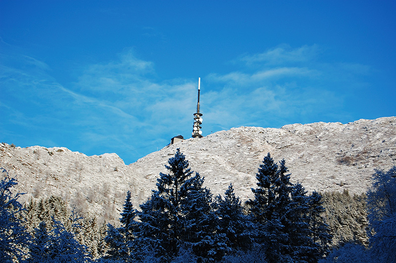
By Sveter
Ulriken is the highest of the seven mountains that surrounds Bergen. It is an advanced trail, making people look at is as a work out. Luckily there is an option for those who just want to enjoy the view and not do the work; Ulriksbanen. It is an aerial tramway that will take you to the top in 3 minutes.
- Time: 1,5 hours.
- Hight: 643 m (2,110 ft).
- Level: Skilled
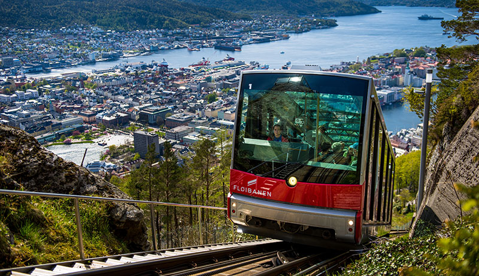
By Fløyen.no
Fløyen is one of the most popular tourist attractions but locals also go here. The trail is suited for everyone and you should not be surprised if you see a kindergarten class walking up Fløyen. However, Fløybanen will take you to the top in no time, while enjoying the warmth inside the tram.
- Time: 1 hour.
- Hight: 425 m (1,394 ft).
- Level: Easy
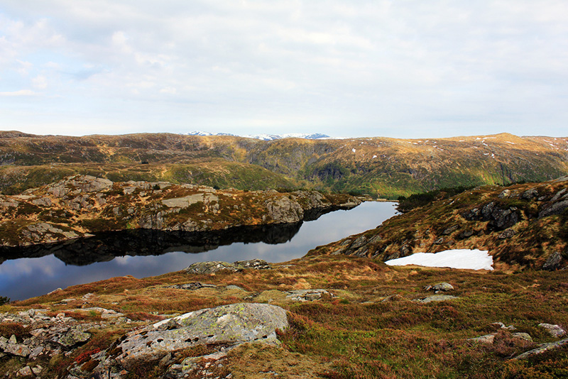
By Laila Alise Pedersen
When walking up to Rundemanen you are close to the finish line, only one mountain left.
- Time: 2 hours.
- Hight: 568 m (1,864 ft).
- Level: Skilled
Sandviksfjellet is the last mountain top for "The seven mountain hike".
- Time: 1 hour.
- Hight: 392 m (1,286 ft).
- Level: Skilled
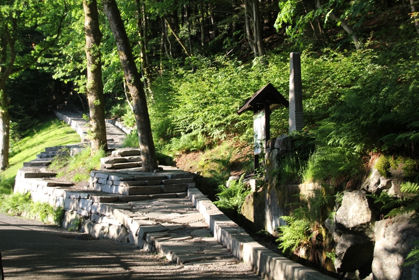
By Sofie Laxaa
When walking all the mountain you can take different roads to the top, Stoltzenkleiven is a part of Sandviksfjellet and is known for people trying to beat the best time by running up, 7.58 min is the best time, but if your not used to work out the average time is around 40 min when walking!
Bergen Aquarium
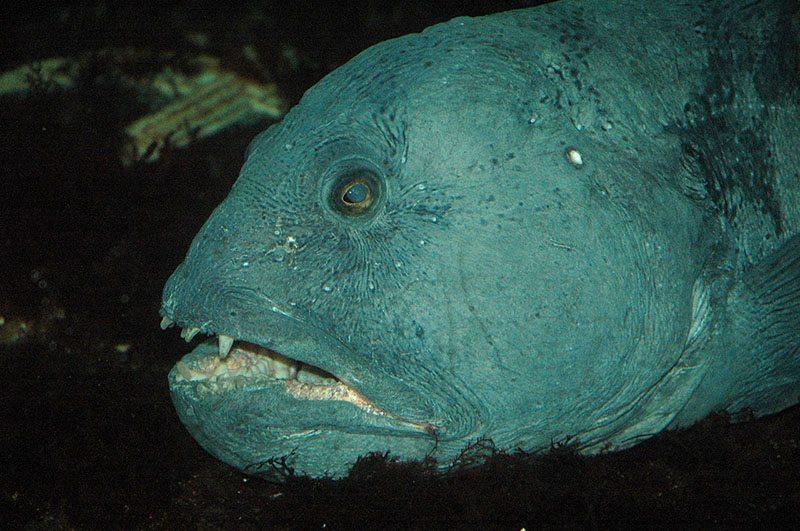
By Tor-Egil Farestveit.
Bergen Aquarium has over 50 large aquariums. The aquariums are made out of environments derived from saltwater, freshwater, tropical saltwater and tropical freshwater. The resort has more than 300 species, and strive to provide animals and fish as natural living conditions as possible. The aquarium has four outdoor ponds. In these ponds live penguins, sea lions and seals. The aquarium has a large tropical area with terrariums where there are snakes, crocodiles, spiders, lizards and other exotic animals.
Market
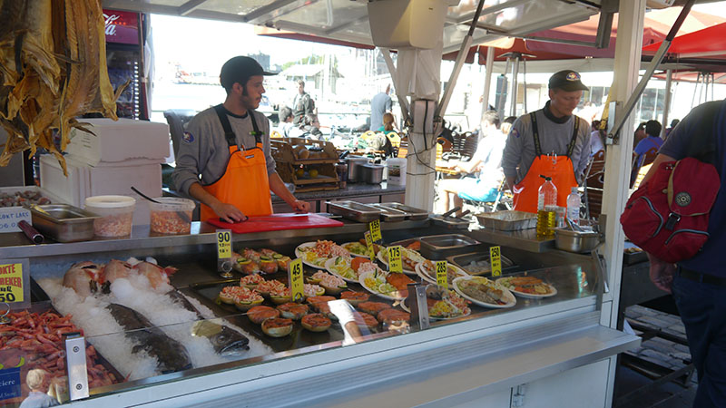
The Fish Market (Fisketorget), is a square inner harbor in Bergen where a trading post of stalls for sale of fish, shellfish, berries, fruits and flowers as well as souvenirs are located. During the summer months you will see a lot of tourist here.
Bryggen
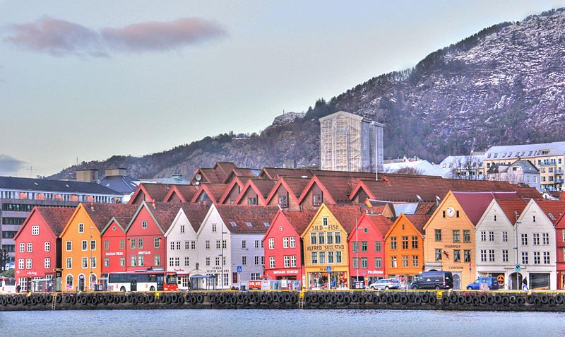
By Ashish Thapliyal.
Bryggen has always been a central part of Bergen and is a perfect place to walk around on if you want to look at a part of the history. There are plenty of restaurants, clubs and stores with traditional Norwegian crafts.
Transportation
The airport bus (Flybussen) is the transportation from the airport and in to town which will take around 20-40 min depending on the traffic.
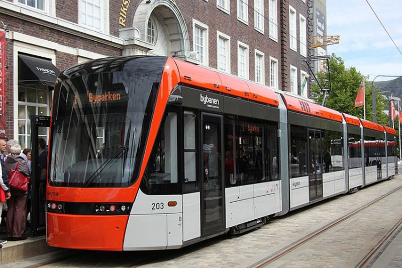
By Nina Aldin Thune.
The tram (Bybanen) is the most used transportation. If you are going to use public transportation a lot, you might want to consider buying a card (ticket) that will last you a month at the time. Read more about tickets on this site: Skyss.no
When moving you probably want to buy some new cheap furniture and other thing to make your new place feel more like home. Then it is good to know that Ikea offers free transportation to their store!
Taxies in Bergen could be cheaper to use than public transportation, especially during the night, when they turn up the prices for busses/trams. If you are more than three people going home at night, you might want to take a taxi and not the night bus/tram.
Nightlife in Bergen
In Norway the legal drinking age is 18, but to buy and drink liquor you have to be 20.
Pre-Party
The alcohol is as everything else in Norway, expensive. The students usually throw a pre-party(most Norwegians call it vors) where everybody brings their own alcohol. The pre-party consists of drinking games, music, sing-a-longs and talking, but this will vary from who you are with.
Party
When everybody has drunk up their alcohol and gotten a bit tipsy, it is time to hit the clubs! Bergen has many pubs and clubs with only a short distance between them. But, if you are under 20 years old, there is not many options to pick from. The best place for you is Kvarteret. All students get in but you have to be 20+ if you are not a student. Kvarteret have different sectors within the club, so that it fits everyone's personality. From those who want to dance, to chill in a lounge, to sing and so on. If you are above 20, you have more options. The most popular clubs and bars are; Kaos, Hulen, Tidi, Lille, Scotsman, Metro, Garage, Cali bar and much more. A good tip is to register to VisBergen. Which gives you discount on alcohol on different days of the week at Scotsman, Tidi, Lille and Kaos.
After-Party
When the clubs close, the next stop is the after-party (nach). Many are probably too tired and just want food and sleep, but for those who are still in a party mode, they can go home to somebody and party some more. The environment is more chilled than the pre-party is, the songs are slower but usually still sing-a-long and the conversations are all over the place.

{kind=link}